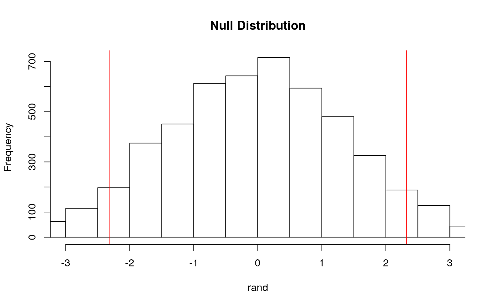
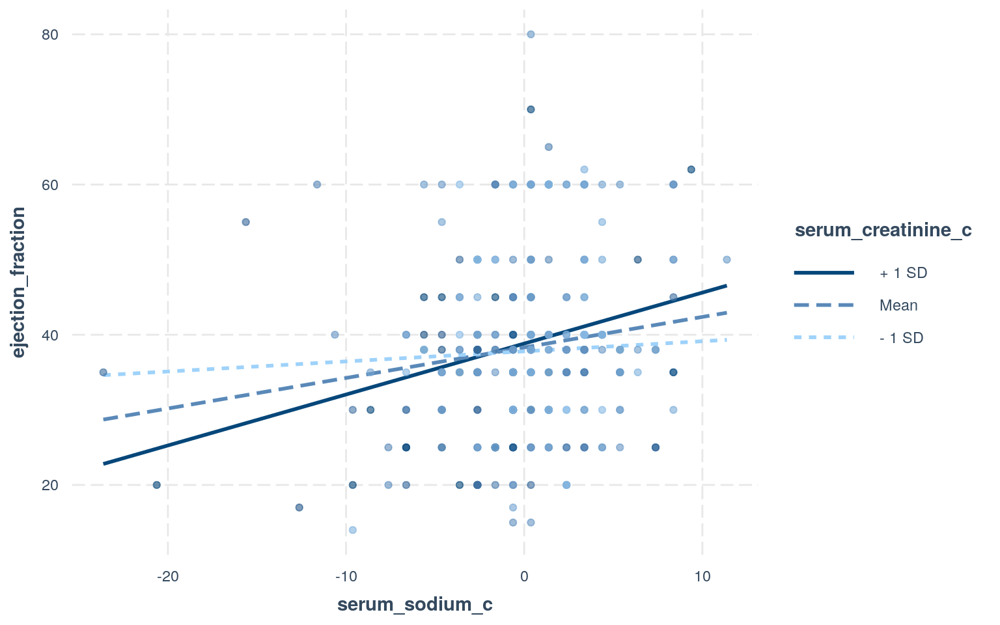
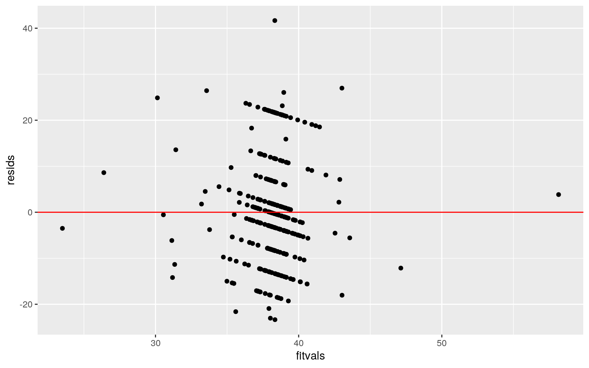
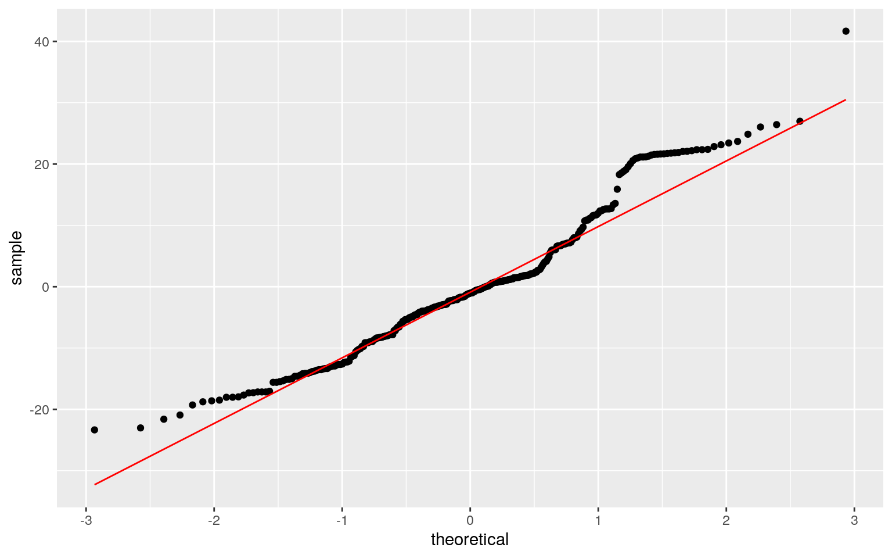
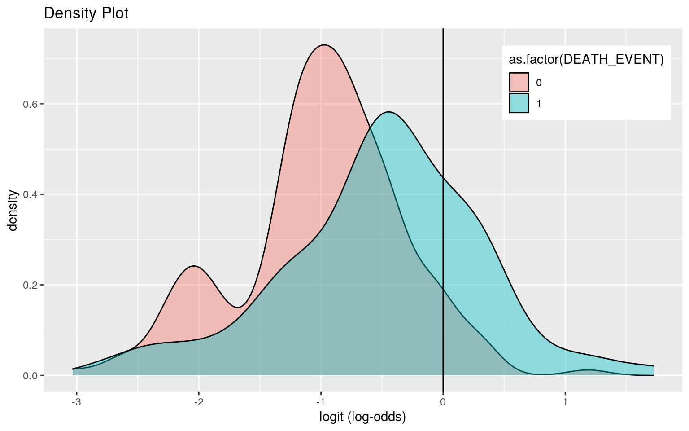
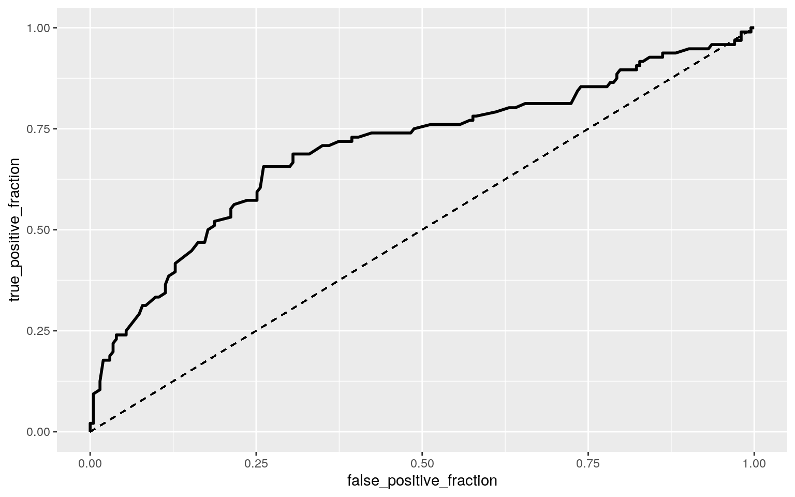

heartfailure <- read_csv("heart_failure.csv")
heartfailure <- heartfailure %>% select(-time)
head(heartfailure)## # A tibble: 6 x 12
## age anaemia creatinine_phos… diabetes ejection_fracti…
high_blood_pres… platelets
## <dbl> <dbl> <dbl> <dbl> <dbl> <dbl> <dbl>
## 1 75 0 582 0 20 1 265000
## 2 55 0 7861 0 38 0 263358.
## 3 65 0 146 0 20 0 162000
## 4 50 1 111 0 20 0 210000
## 5 65 1 160 1 20 0 327000
## 6 90 1 47 0 40 1 204000
## # … with 5 more variables: serum_creatinine <dbl>,
serum_sodium <dbl>, sex <dbl>, smoking <dbl>,
## # DEATH_EVENT <dbl>For this project, I chose a dataset from www.kaggle.com called "Heart Failure Clinical Records Dataset." I chose this dataset because I have always been intrigued by medical data and diseases that affect humans, and collecting data on these diseases is crucial to advancing science and medical understanding. Also, cardiovascular disease is the #1 cause of death in the world, so it is very important to research and collect data on. There are 299 observations and 13 variables, which include age, anaemia (boolean), which is determined by a decrease in red blood cells, creatinine_phosphokinase (mcg/L), which is the level of the CPK enzyme in the patient's blood, diabetes (boolean), ejection_fraction, which is the percentage of blood leaving the heart at each contraction (%), high_blood_pressure (boolean), platelet count in the blood (kiloplatelets/mL), serum_creatinine, which is the level of serum creatinine in the blood (mg/dL), serum_sodium, which is the level of serum sodium in the blood (mEq/L), sex (0 for woman and 1 for man), smoking (0 for doesn't smoke and 1 for smokes), time, and DEATH_EVENT, which is whether or not the patient died (0 for survived and 1 for died). I decided to remove the variable 'time' from the dataset, since the data description did not say what the units of this variable were.
manova<-manova(cbind(creatinine_phosphokinase,ejection_fraction,
serum_creatinine,serum_sodium)~anaemia,data=heartfailure)
summary(manova)## Df Pillai approx F num Df den Df Pr(>F)
## anaemia 1 0.043005 3.3029 4 294 0.01144 *
## Residuals 297
## ---
## Signif. codes: 0 '***' 0.001 '**' 0.01 '*' 0.05 '.' 0.1
' ' 1summary.aov(manova)## Response creatinine_phosphokinase :
## Df Sum Sq Mean Sq F value Pr(>F)
## anaemia 1 10207179 10207179 11.213 0.0009168 ***
## Residuals 297 270347475 910261
## ---
## Signif. codes: 0 '***' 0.001 '**' 0.01 '*' 0.05 '.' 0.1
' ' 1
##
## Response ejection_fraction :
## Df Sum Sq Mean Sq F value Pr(>F)
## anaemia 1 42 41.565 0.2961 0.5868
## Residuals 297 41697 140.395
##
## Response serum_creatinine :
## Df Sum Sq Mean Sq F value Pr(>F)
## anaemia 1 0.87 0.86814 0.8107 0.3687
## Residuals 297 318.05 1.07089
##
## Response serum_sodium :
## Df Sum Sq Mean Sq F value Pr(>F)
## anaemia 1 10.2 10.177 0.5219 0.4706
## Residuals 297 5791.9 19.501heartfailure %>% group_by(anaemia) %>% summarize(mean(creatinine_phosphokinase))## # A tibble: 2 x 2
## anaemia `mean(creatinine_phosphokinase)`
## <dbl> <dbl>
## 1 0 743.
## 2 1 370.pairwise.t.test(heartfailure$creatinine_phosphokinase, heartfailure$anaemia, p.adj="none")##
## Pairwise comparisons using t tests with pooled SD
##
## data: heartfailure$creatinine_phosphokinase and
heartfailure$anaemia
##
## 0
## 1 0.00092
##
## P value adjustment method: none0.05/6## [1] 0.008333333In this MANOVA test, I chose to test whether the means of creatinine_phosphokinase, ejection_fraction, serum_sodium, and serum_creatinine differed across patients who had anaemia and ones who didn't. The p-value for the MANOVA test was 0.01144, which is less than 0.05, meaning that at least one of these variables does differ significantly among anaemia. I then performed one-way ANOVAs for each of these variables, which showed that the mean level of CPK enzyme in the blood did differ among anaemia. Then, I did a post-hoc t test to determine which group differed. After calculating the bonferonni correction (0.05/6 tests= 0.00833) for doing 1 MANOVA, 4 ANOVAs, and 1 post-hoc t test, the mean CPK enzyme levels were still significantly lower in patients with anaemia (0.00092<0.00833). The MANOVA assumptions of random sampling and independent observations were met, since the data was sampled randomly from separate patients. We also assume that the assumptions of linear relationships among dependent variables, homogeneity of within-group covariance matrices are all met. However, multicollinearity and multivariate normality may be violated since we expect many of these variables to be related/correlated to one another, and no extreme outliers may also be violated because we did not filter out any extreme outliers.
heartfailure %>% group_by(high_blood_pressure) %>% summarize(average=mean(age)) %>% summarize(meandiff=diff(average))## # A tibble: 1 x 1
## meandiff
## <dbl>
## 1 2.32rand <- vector()
for(i in 1:5000){
new<-data.frame(age=sample(heartfailure$age),bp=heartfailure$high_blood_pressure)
rand[i]<-mean(new[new$bp=="0",]$age)-
mean(new[new$bp=="1",]$age)}
mean(rand>2.320784 | rand< -2.320784) ## [1] 0.1048t.test(data=heartfailure,age~high_blood_pressure)##
## Welch Two Sample t-test
##
## data: age by high_blood_pressure
## t = -1.6366, df = 221.74, p-value = 0.1031
## alternative hypothesis: true difference in means is not
equal to 0
## 95 percent confidence interval:
## -5.1154412 0.4738739
## sample estimates:
## mean in group 0 mean in group 1
## 60.01890 62.33969{hist(rand, main="Null Distribution", ylab="Frequency", xlim=c(-3,3)); abline(v = c(-2.320784, 2.320784), col="red")}
H0: Mean age is the same between patients with high blood pressure and patients without high blood pressure. Ha: Mean age differs between patients with high blood pressure and patients without high blood pressure.
I performed a randomization to test whether age differs significantly among those with high blood pressure and those without high blood pressure. The resulting p-value was 0.1046, which is greater than 0.05, so I fail to reject the null hypothesis and conclude that mean age does not differ among patients with and without high blood pressure in this specific study. I then did a Welch t-test comparing the mean age in patients with and without blood pressure and the p-value from this was 0.1031 (>0.05).
#Mean centering numeric variables
heartfailure$serum_creatinine_c <- heartfailure$serum_creatinine - mean(heartfailure$serum_creatinine)
heartfailure$serum_sodium_c <- heartfailure$serum_sodium - mean(heartfailure$serum_sodium)
#Linear regression model
fit <- lm(ejection_fraction ~ serum_creatinine_c * serum_sodium_c, data=heartfailure)
summary(fit)##
## Call:
## lm(formula = ejection_fraction ~ serum_creatinine_c *
serum_sodium_c,
## data = heartfailure)
##
## Residuals:
## Min 1Q Median 3Q Max
## -23.346 -8.108 -1.057 6.325 41.666
##
## Coefficients:
## Estimate Std. Error t value Pr(>|t|)
## (Intercept) 38.3099 0.6837 56.033 <2e-16 ***
## serum_creatinine_c 0.5010 0.6759 0.741 0.4591
## serum_sodium_c 0.4063 0.1609 2.525 0.0121 *
## serum_creatinine_c:serum_sodium_c 0.2630 0.1401 1.877
0.0615 .
## ---
## Signif. codes: 0 '***' 0.001 '**' 0.01 '*' 0.05 '.' 0.1
' ' 1
##
## Residual standard error: 11.64 on 295 degrees of freedom
## Multiple R-squared: 0.04287, Adjusted R-squared: 0.03314
## F-statistic: 4.404 on 3 and 295 DF, p-value: 0.004752#Plotting the regression
interact_plot(fit, pred = serum_sodium_c, modx = serum_creatinine_c, plot.points = TRUE)
#Testing assumptions
resids<-fit$residuals
fitvals<-fit$fitted.values
ggplot()+
geom_point(aes(fitvals,resids))+
geom_hline(yintercept=0, col="red")
ggplot()+
geom_qq(aes(sample=resids))+
geom_qq_line(aes(sample=resids), color='red')
bptest(fit)##
## studentized Breusch-Pagan test
##
## data: fit
## BP = 1.0743, df = 3, p-value = 0.7833#Regression with robust SEs
coeftest(fit, vcov = vcovHC(fit))[,1:2]## Estimate Std. Error
## (Intercept) 38.3098662 0.7000221
## serum_creatinine_c 0.5009819 1.0137026
## serum_sodium_c 0.4063411 0.1746757
## serum_creatinine_c:serum_sodium_c 0.2629988 0.1256907I created a linear regression model to predict the ejection_fraction (amount of blood pumped out of the heart during one contraction) in patients, from serum creatinine and serum sodium levels in the blood, after mean-centering the two predictor variables. The intercept was 38.3099 which is the predicted ejection fraction when the serum sodium and creatinine levels are zero, the coefficient for serum_creatinine_c is 0.501 which is the increase in ejection fraction for every one unit increase in serum creatinine, after controlling for serum sodium (p-value>0.05), the coefficient for serum_sodium_c is 0.4063 which means ejection fraction increases 0.4063 for every one unit increase in serum sodium, after controlling for serum creatinine (p-value<0.05), and the coefficient for the interaction between the two numeric variables is 0.263 (p-value>0.05). The p-values for the intercept (2e-16) and serum_sodium_c (0.0121) were significant. I then used the interactions package to plot this regression, where you can see the positive relationship between the predictor variables and ejection_fraction. The assumptions of linearity, normality, and homoskedasticity are met from looking at the plots made to test these assumptinos. I then recomputed the regression using robust standard errors, which did not change any of the values. The proportion of variation in the outcome my model explains is 4.29%.
samp_distn<- replicate(5000, {
bootstrap<- heartfailure %>% sample_frac(replace=TRUE)
fit<-lm(ejection_fraction ~ serum_creatinine_c * serum_sodium_c, data=bootstrap)
coef(fit)
})
samp_distn %>% t %>% as.data.frame %>% summarize_all(sd)## (Intercept) serum_creatinine_c serum_sodium_c
serum_creatinine_c:serum_sodium_c
## 1 0.7099075 1.079831 0.1700408 0.1704766Above, I reran the same linear regression model, but calculated bootstrapped standard errors by resampling observations. All of the standard errors changed from the regression with robust SEs. They also changed from the original SEs, since these were the same as the robust SEs. The intercept SE from the robust SEs was 0.70 and the intercept SE from the bootstrapped standard errors was 0.711. The serum creatinine, serum sodium, and their interaction from the robust SEs were 1.014, 0.175, and 0.126, respectively, and their bootstrapped standard errors were 1.073, 0.172, and 0.1685.
#Logistic Regression
fit2<-glm(DEATH_EVENT ~ ejection_fraction + serum_sodium, data=heartfailure, family=binomial(link="logit"))
coeftest(fit2)##
## z test of coefficients:
##
## Estimate Std. Error z value Pr(>|z|)
## (Intercept) 11.912310 4.203983 2.8336 0.004603 **
## ejection_fraction -0.051621 0.012698 -4.0652 4.799e-05
***
## serum_sodium -0.078951 0.030979 -2.5485 0.010818 *
## ---
## Signif. codes: 0 '***' 0.001 '**' 0.01 '*' 0.05 '.' 0.1
' ' 1exp(coef(fit2)) %>% round(3)## (Intercept) ejection_fraction serum_sodium
## 149090.746 0.950 0.924#Confusion Matrix
heartfailure$probs<-predict(fit2,type="response")
pred<-ifelse(heartfailure$probs>.5,1,0)
table(predict=pred,truth=heartfailure$DEATH_EVENT)%>%addmargins## truth
## predict 0 1 Sum
## 0 192 73 265
## 1 11 23 34
## Sum 203 96 299#Accuracy= 0.719
(192+23)/299## [1] 0.7190635#Sensitivity (TPR)= 0.946
192/203## [1] 0.9458128#Specificity (TNR)= 0.240
23/96## [1] 0.2395833#Precision (PPV)= 0.724
192/265## [1] 0.7245283#Plot
heartfailure$logit<-predict(fit2,type="link")
heartfailure%>%ggplot()+
geom_density(aes(logit, fill=as.factor(DEATH_EVENT)), alpha=.4)+
theme(legend.position=c(.85,.85))+
geom_vline(xintercept=0)+xlab("logit (log-odds)")+ ggtitle("Density Plot")
#ROC
ROCplot<-ggplot(heartfailure)+geom_roc(aes(d=DEATH_EVENT, m=probs), n.cuts=0)+geom_segment(aes(x=0,xend=1,y=0,yend=1),lty=2)
ROCplot
#AUC
calc_auc(ROCplot)## PANEL group AUC
## 1 1 -1 0.7016112Since the deaths of patients with heart failure is a binary variable and is the main focus of the research done for this dataset, I decided to predict this binary variable with ejection_fraction, or the percent of blood ejected from the patient's heart during each contraction, and the sodium level in serum. Every p-value from this logistic regression was significant. The intercept is 11.912, meaning when ejection_fraction and serum_sodium are 0 the log odds of death occurring is 11.912, the ejection_fraction coefficient is -0.0516, and the serum_sodium coefficient is -0.07895. I then created a confusion matrix, from which the accuracy was 0.719, the sensitivity was 0.946, the specificity was 0.240, the precision was 0.724, and the AUC was 0.702. I made a density plot which shows the proportion of patients who did not die that the model predicted as dead (gray area right of 0) and the proportion of patients who died that the model predicted did not die (gray area to the left of 0), as well as the true positives and true negatives, and a ROC plot that shows sensitivity against specificty. My ROC plot is not close to one that would yield an AUC close to 1.0, but it is significantly above the line with a slope of 1. The AUC of the model, calculated from the ROC plot, was 0.702, which is fair, but not good or great.
fit3<-glm(DEATH_EVENT~ejection_fraction+serum_sodium+serum_creatinine+platelets+creatinine_phosphokinase+age,data=heartfailure,family="binomial")
summary(fit3)##
## Call:
## glm(formula = DEATH_EVENT ~ ejection_fraction +
serum_sodium +
## serum_creatinine + platelets + creatinine_phosphokinase
+
## age, family = "binomial", data = heartfailure)
##
## Deviance Residuals:
## Min 1Q Median 3Q Max
## -2.3279 -0.7899 -0.4918 0.8739 2.4366
##
## Coefficients:
## Estimate Std. Error z value Pr(>|z|)
## (Intercept) 4.372e+00 4.512e+00 0.969 0.333
## ejection_fraction -6.680e-02 1.447e-02 -4.617 3.90e-06
***
## serum_sodium -5.126e-02 3.295e-02 -1.556 0.120
## serum_creatinine 6.288e-01 1.602e-01 3.924 8.72e-05 ***
## platelets -1.038e-07 1.526e-06 -0.068 0.946
## creatinine_phosphokinase 2.093e-04 1.350e-04 1.550 0.121
## age 5.342e-02 1.256e-02 4.253 2.11e-05 ***
## ---
## Signif. codes: 0 '***' 0.001 '**' 0.01 '*' 0.05 '.' 0.1
' ' 1
##
## (Dispersion parameter for binomial family taken to be 1)
##
## Null deviance: 375.35 on 298 degrees of freedom
## Residual deviance: 300.70 on 292 degrees of freedom
## AIC: 314.7
##
## Number of Fisher Scoring iterations: 5exp(coef(fit3))%>%round(3)## (Intercept) ejection_fraction serum_sodium
serum_creatinine
## 79.204 0.935 0.950 1.875
## platelets creatinine_phosphokinase age
## 1.000 1.000 1.055#Confusion Matrix
heartfailure$prob3 <- predict(fit3, type="response")
heartfailure$pred3 <- ifelse(heartfailure$prob3>0.5,1,0)
table(truth=heartfailure$DEATH_EVENT, prediction=heartfailure$pred3>0.5) %>% addmargins## prediction
## truth FALSE TRUE Sum
## 0 186 17 203
## 1 52 44 96
## Sum 238 61 299class_diag<-function(probs,truth){
tab<-table(factor(probs>.5,levels=c("FALSE","TRUE")),truth)
prediction<-ifelse(probs>.5,1,0)
acc=mean(truth==prediction)
sens=mean(prediction[truth==1]==1)
spec=mean(prediction[truth==0]==0)
ppv=mean(truth[prediction==1]==1)
f1=2*(sens*ppv)/(sens+ppv)
if(is.numeric(truth)==FALSE & is.logical(truth)==FALSE) {truth<-as.numeric(truth)-1}
#CALCULATE EXACT AUC
ord<-order(probs, decreasing=TRUE)
probs <- probs[ord]; truth <- truth[ord]
TPR=cumsum(truth)/max(1,sum(truth))
FPR=cumsum(!truth)/max(1,sum(!truth))
dup<-c(probs[-1]>=probs[-length(probs)], FALSE)
TPR<-c(0,TPR[!dup],1); FPR<-c(0,FPR[!dup],1)
n <- length(TPR)
auc<- sum( ((TPR[-1]+TPR[-n])/2) * (FPR[-1]-FPR[-n]) )
data.frame(acc,sens,spec,ppv,auc)
}
class_diag(heartfailure$prob3, heartfailure$DEATH_EVENT)## acc sens spec ppv auc
## 1 0.7692308 0.4583333 0.9162562 0.7213115 0.7970033#10-fold CV
k=10
data<-heartfailure[sample(nrow(heartfailure)),]
folds<-cut(seq(1:nrow(heartfailure)),breaks=k,labels=F)
diags<-NULL
for(i in 1:k){
train<-data[folds!=i,]
test<-data[folds==i,]
truth<-test$DEATH_EVENT
fit3<-glm(DEATH_EVENT~ejection_fraction+serum_sodium+serum_creatinine+platelets+creatinine_phosphokinase+age,data=heartfailure,family="binomial")
probs<-predict(fit3,newdata = test,type="response")
diags<-rbind(diags,class_diag(probs,truth))
}
summarize_all(diags,mean)## acc sens spec ppv auc
## 1 0.7694253 0.4668407 0.9118612 0.7691667 0.794171#LASSO
heartfailure2 <- heartfailure %>% select(-"smoking",-"sex",-"anaemia",-"diabetes",-"high_blood_pressure")
y<-as.matrix(heartfailure2$DEATH_EVENT) #grab response
x<-model.matrix(DEATH_EVENT~.,data=heartfailure2)[,-1] #grab predictors
x <- scale(x)
head(x)## age creatinine_phosphokinase ejection_fraction platelets
serum_creatinine serum_sodium
## 1 1.1909487 0.000165451 -1.527997920 1.678834e-02
0.48923681 -1.50151891
## 2 -0.4904571 7.502062717 -0.007064906 7.523048e-09
-0.28407611 -0.14173853
## 3 0.3502458 -0.449185725 -1.527997920 -1.036336e+00
-0.09074788 -1.72814897
## 4 -0.9108085 -0.485257493 -1.527997920 -5.455595e-01
0.48923681 0.08489153
## 5 0.3502458 -0.434757017 -1.527997920 6.507077e-01
1.26254973 -4.67433977
## 6 2.4520030 -0.551217299 0.161927651 -6.069065e-01
0.68256504 -1.04825878
## serum_creatinine_c serum_sodium_c probs logit prob3
pred3
## 1 0.48923681 -1.50151891 2.2454584 1.93018753 2.2851668
1.971951
## 2 -0.28407611 -0.14173853 -0.0559001 0.07115195
0.9062019 1.971951
## 3 -0.09074788 -1.72814897 2.3669136 2.03480940 1.5505997
1.971951
## 4 0.48923681 0.08489153 1.3325623 1.19783448 0.6543842
-0.505416
## 5 1.26254973 -4.67433977 3.6062868 3.39489363 2.5673739
1.971951
## 6 0.68256504 -1.04825878 0.2683403 0.35282781 1.8438767
1.971951cv<-cv.glmnet(x,y,family="binomial")
lasso<-glmnet(x,y,family="binomial",lambda=cv$lambda.1se)
coef(lasso)## 13 x 1 sparse Matrix of class "dgCMatrix"
## s0
## (Intercept) -0.8080919
## age .
## creatinine_phosphokinase .
## ejection_fraction .
## platelets .
## serum_creatinine .
## serum_sodium .
## serum_creatinine_c .
## serum_sodium_c .
## probs .
## logit .
## prob3 0.6474790
## pred3 .k=10
data <- heartfailure2 %>% sample_frac #put rows of dataset in random order
folds <- ntile(1:nrow(data),n=10) #create fold labels
diags<-NULL
for(i in 1:k){
train <- data[folds!=i,] #create training set (all but fold i)
test <- data[folds==i,] #create test set (just fold i)
truth <- test$DEATH_EVENT #save truth labels from fold i
fit <- glm(DEATH_EVENT~age+serum_creatinine,
data=train, family="binomial")
probs <- predict(fit, newdata=test, type="response")
diags<-rbind(diags,class_diag(probs,truth))
}
diags%>%summarize_all(mean)## acc sens spec ppv auc
## 1 0.7258621 0.3033536 0.9338585 0.7246825 0.714512Above, I did another logistic regression predicting the death of patients with heart failure, this time using all of the numeric variables. The accuracy, found from a confusion matrix of the model, is 0.769, the sensitivity is 0.458, the specificity is 0.916, the precision is 0.721, and the AUC is 0.797, which means the performance of this model is fair. I then did a 10-fold CV with the same model, and calculated an accuracy of 0.769, a sensitivity of 0.473, a specificity of 0.916, a precision of 0.711, and an AUC of 0.787. These values were different from the in-sample classification diagnostics, besides the accuracy and specificity. The AUC of the out-of-sample classification diagnostics was slightly lower than the in-sample AUC. I then did a LASSO regression with the same model, and the variables that were retained were age and serum_creatinine. Lastly, I performed another 10-fold CV using the variables selected from the LASSO, and found an AUC of 0.7164, which is less than the other two AUCs of 0.797 and 0.787, but still fair.